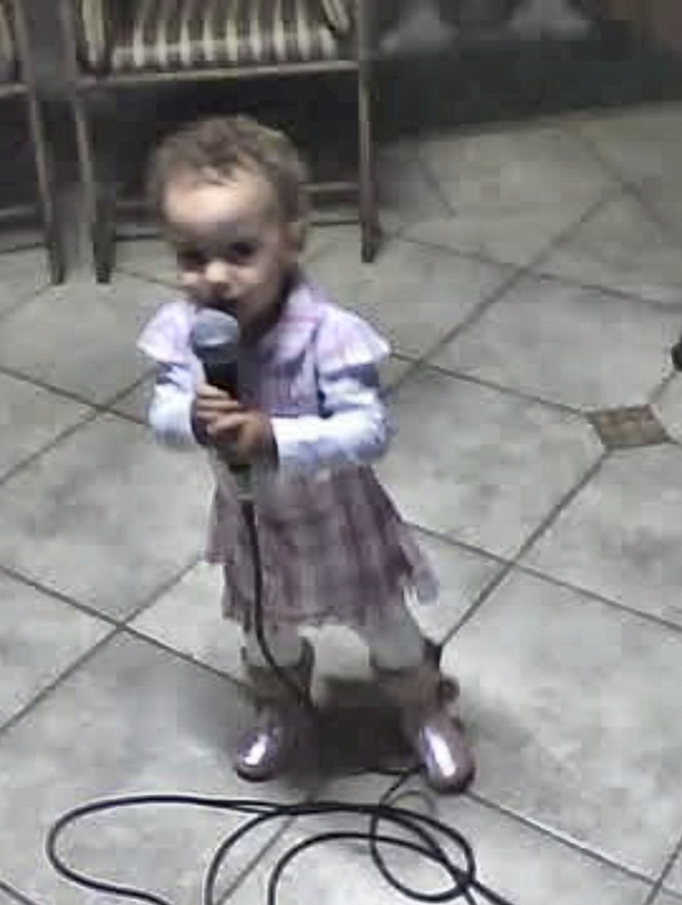

CAPÍTULO 01
O começo
A história começa cedo, bem cedo. Com apenas 2 anos e meio, a Melyssa já mostrava o gosto pela música sertaneja. Foi quando ganhou seu primeiro violão, um violão rosa que ela mesma enfeitou todo de strass, e que guarda com carinho até hoje.
Aos 11 anos, o que era paixão de menina virou coisa séria: ela começou a cantar profissionalmente e não parou mais. Ali, a brincadeira virou o caminho de uma vida.


Aos 2 anos, já no microfone.